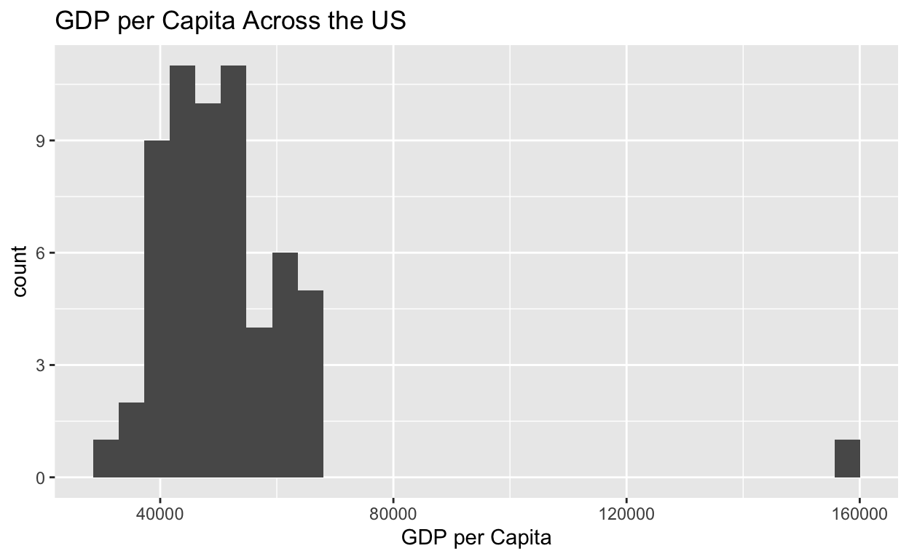
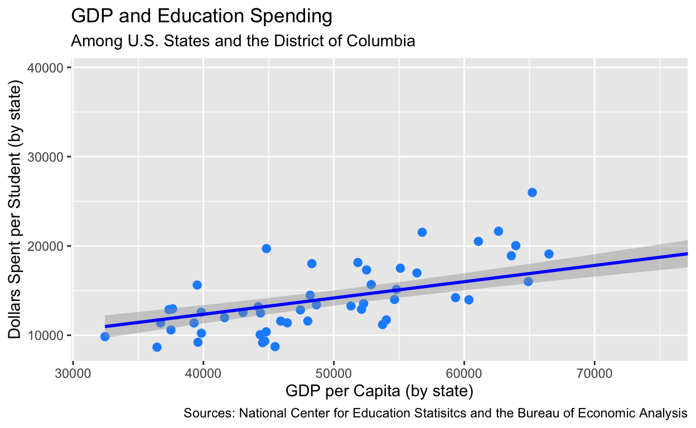

My final project
The guiding question for this research project was, does funding for an American state’s elementary, middle, and high schools have correlation/a causal relationship with a state’s GDP per capita? I hypothesized that states that put more money towards educating its students would produce a workforce that is made up of higher earners, which would lead to a higher GDP per capita. This area of research is important because it gives some insight into the importance of education, as it relates to economic outcomes in a person’s life. If my hypothesis is proven correct, it could mean that school funding has an impact in improving quality of life (because by virtually all accounts, a person with a stable income is better off than an impoverished person). By bringing attention to this idea, it could lead to a more intense focus on school funding and avoiding cutting school budgets or taking other adverse actions that could eventually worsen economic outcomes of state residents.
# A tibble: 60 × 3
Fips Area `GDP per Capita`
<dbl> <chr> <dbl>
1 0 United States 51337
2 1000 Alabama 37508
3 2000 Alaska 63610
4 4000 Arizona 39583
5 5000 Arkansas 36714
6 6000 California 60359
7 8000 Colorado 54026
8 9000 Connecticut 62633
9 10000 Delaware 63955
10 11000 District of Columbia 159607
# ℹ 50 more rowsschools <- rawschools |>
select("Area", "Total Revenues (TR) per Pupil (MEMBR) [State Finance] 2016-17")|>
rename("Spending per Student" = `Total Revenues (TR) per Pupil (MEMBR) [State Finance] 2016-17`)
schools# A tibble: 51 × 2
Area `Spending per Student`
<chr> <dbl>
1 Alabama 10590
2 Alaska 18897
3 Arizona 9214
4 Arkansas 11388
5 California 13965
6 Colorado 11713
7 Connecticut 21647
8 Delaware 20035
9 District of Columbia 29425
10 Florida 10227
# ℹ 41 more rowsMy sources for this graph are directly from the US government. The data for school spending was compiled by the US Census Bureau. For GDP, I used data compiled from the US Bureau of Economic Analysis; this Bureau uses local, state, and federal data to monitor and release the most reliable data on GDP. Using data from these two reliable, government sources has been very helpful because of the groups’ access to census data and tax records, which allows their numbers to paint a really holistic picture of school spending and GDP variables.
The independent variable is a state’s school funding per student. The dependent variable, and my variable of interest, is a state’s GDP per capita. Below, the variable of interest is represented by a bar plot that shows the frequency of GDP values among the 50 states (and the District of Columbia). The bar graph shows a clear clustering of GDP per capita between $35,000 to $70,000, with the District of Columbia being an outlier at around $158,000.
HOW ARE THEY MEASURED??
ggplot(data = gdp,
mapping = aes(x = `GDP per Capita`)) +
geom_histogram() +
labs(title = "GDP per Capita Across the US")
gdp_schools <- left_join(gdp, schools, by = "Area")
gdp_schools# A tibble: 60 × 4
Fips Area `GDP per Capita` `Spending per Student`
<dbl> <chr> <dbl> <dbl>
1 0 United States 51337 NA
2 1000 Alabama 37508 10590
3 2000 Alaska 63610 18897
4 4000 Arizona 39583 9214
5 5000 Arkansas 36714 11388
6 6000 California 60359 13965
7 8000 Colorado 54026 11713
8 9000 Connecticut 62633 21647
9 10000 Delaware 63955 20035
10 11000 District of Columbia 159607 29425
# ℹ 50 more rowsgraph_1 <- ggplot(data = gdp_schools,
aes(x = `GDP per Capita`,
y = `Spending per Student`)) +
geom_point(size = 2.25, color = "dodgerblue") +
geom_smooth(method = "lm", color = "blue") +
coord_cartesian(xlim = c(32000, 75000)) +
labs(x = "GDP per Capita (by state)",
y = "Dollars Spent per Student (by state)",
title = "GDP and Education Spending",
subtitle = "Among U.S. States and the District of Columbia",
caption = "Sources: National Center for Education Statisitcs and the Bureau of Economic Analysis")
graph_1
fit.student <- lm(`GDP per Capita` ~ `Spending per Student`, data = gdp_schools)
fit.student
Call:
lm(formula = `GDP per Capita` ~ `Spending per Student`, data = gdp_schools)
Coefficients:
(Intercept) `Spending per Student`
9125.196 2.927 fit.student |>
summary()
Call:
lm(formula = `GDP per Capita` ~ `Spending per Student`, data = gdp_schools)
Residuals:
Min 1Q Median 3Q Max
-21966 -5611 -830 4740 64349
Coefficients:
Estimate Std. Error t value Pr(>|t|)
(Intercept) 9125.1961 5886.6013 1.550 0.128
`Spending per Student` 2.9272 0.3907 7.492 1.15e-09 ***
---
Signif. codes: 0 '***' 0.001 '**' 0.01 '*' 0.05 '.' 0.1 ' ' 1
Residual standard error: 12260 on 49 degrees of freedom
(9 observations deleted due to missingness)
Multiple R-squared: 0.5339, Adjusted R-squared: 0.5244
F-statistic: 56.12 on 1 and 49 DF, p-value: 1.153e-09Based on the scatter plot graph alone, it is clear that there is a noticeable, positive correlation between the school spending and state GDP per capita variables. While there are a few outliers (especially the Washington D.C. point, which is cropped out of this graph), most points are clustered relatively close to the trendline that has been added to the graph. Just by giving it an eye test, I am starting to feel confident that my hypothesis may be correct, and that school spending may, in fact, be a factor in driving up a state’s GDP.
After running a regression with the “lm()” function I became more confident yet that my hypothesis did contain some sort of truth. The intercept is about 9125. This means that if school spending per student (the Y-axis) were $0, then a state’s GDP per capita (the X-axis) could be predicted to be $9125. The main coefficient of interest is about 2.93. This means that for each dollar ($1) that is put towards school funding per student, the GDP per capita of a state can be predicted to increase by about $2.93. This relationship strengthens the claim I make in my hypothesis.
Using the “summary()” function, I was able to concretely prove that there was a significance to my graph and argument as a whole. The P-Value was calculated to be 1.153e-09 (or 0.00000000115). Statistical significance, at least for the data we have been analyzing, is achieved when the p-value is below 0.05. So, since the value is far below 0.05, I can say that there is a much higher than 95% chance that the observations documented were due to chance. Based on the P-Value, the data is strongly statistically significant. Additionally, I found the multiple R-squared value to be 0.53. This means that 53% of the variation is explained by school spending.
While there is significance and correlation, I am very hesitant to say that there is causality in this graph. While there is a relationship between school spending and GDP per capita, there are so many different explanations and factors that could be influencing both of these variables. First, I cannot be sure that the relationship is opposite to what I have claimed: it may be that GDP per capita is actually driving up school spending. Additionally, there are a ton of potential confounders with these variables. Within a state, there are so many other things (like political parties in power, global politics, geographic location, urban-rural divide, job market, etc., etc.) that contribute greatly to a state’s GDP. Using the graph’s multiple R-squared value, which is 0.53, this gap in my data is quantified. Only 53% of the variance in the graph attributes school spending to growth in GDP, leaving 47% of the variance susceptible to other variables. It would be short sighted to say that school spending directly causes GDP per capita to rise.
In conclusion, I believe I’ve found two key values in this research that support my hypothesis. At the outset of this project, predicted that the greater amount of funding per student that is put towards education, the greater a state’s GDP per capita will be. The first key finding that supports this assertion was the positive correlation I found. The graph showed that for every dollar that is put towards school funding per student, the GDP per capita of a state can be predicted to rise by $2.93. The second key finding was that the relationship between a state’s school funding and that state’s GDP per capita has a P-Value of 0.00000000115. This value, when compared to an alpha value of 0.05, is highly statistically significant. The correlation proves that school funding makes an impact on a state’s GDP, and the P-Value proves that this impact is not due to chance.
While I do not believe that there is room for confounding values within the dataset, there certainly are missing values that disallow me from making causal inferences. Factors that I mentioned in the data analysis section, especially things like parties in power and the urban-rural divide, I suspect have an impact on a state’s GDP. By not including these factors, it is impossible for me to come to a causal conclusion, despite the data’s strong correlation and P-Value.
Knowing what I know now, I would really like to add more variables into my dataset. It is super hyperfocused right now on just these two variables because of the way I manually pieced the dataset together.
Introduction: describe the research question and main hypothesis; describe why it is important. (1-2 paragraphs) (2pts) The guiding question for this research project was, does funding for an American state’s elementary, middle, and high schools have correlation/a causal relationship with a state’s GDP per capita? I hypothesized that states that put more money towards educating its students would produce a workforce that is made up of higher earners, which would lead to a higher GDP per capita. This area of research is important because it gives some insight into the importance of education, as it relates to outcomes in a person’s life on the whole. If my hypothesis is proven correct, it could mean that school funding has an impact in improving quality of life (because by virtually all accounts, a person with a stable income is better off than an impoverished person). By bringing attention to this idea, it could lead to a more intense focus for state’s to avoid cutting school budgets or taking other adverse actions that could eventually worsen the lives of state residents across the board.
Data section: 2-3 paragraphs + plot visualizing main outcome of interest. (3pts). A data section that briefly describes the data source, describes how the key dependent and independent variables are measured (e.g., a survey, statistical model, or expert coding), and also produces a plot that summarizes the dependent variable - Data sources are in Google Doc. Collected via Census Data (schools) and through GDP collection. - Independent variable (what influences): School funding. Dependent (what is influenced): GDP per capita.
Results section: plot of main analysis + regression output + 2-3 paragraphs of description and interpretation of the plots and regression (including interpreting the main coefficient of interest and describing if it is statistically significant and if we should interpret it causally). This section could be longer if you choose to include additional analyses. (8pts)
Based on the scatter plot graph alone, it is clear that there is a noticeable, positive correlation between the school spending and state GDP per capita variables. While there are a few outliers (especially the Washington D.C. point, which is cropped out of this graph), most points are clustered relatively close to the trendline that has been added to the graph. Just by giving it an eye test, I am starting to feel confident that my hypothesis may be correct, and that school spending may, in fact, be a factor in driving up a state’s GDP.
After running a regression with the “lm()” function I became more confident yet that my hypothesis did contain some sort of truth. The intercept is about 9125. This means that if school spending per student (the Y-axis) were $0, then a state’s GDP per capita (the X-axis) could be predicted to be $9125. The main coefficient of interest is about 2.93. This means that for each dollar ($1) that is put towards school funding per student, the GDP per capita of a state can be predicted to increase by about $2.93. This relationship strengthens the claim I make in my hypothesis.
Using the “summary()” function, I was able to concretely prove that there was a significance to my graph and argument as a whole. The P-Value was calculated to be 1.153e-09 (or 0.00000000115). Statistical significance, at least for the data we have been analyzing, is achieved when the p-value is below 0.05. So, since the value is far below 0.05, I can say that there is a much higher than 95% chance that the observations documented were due to chance. Based on the P-Value, the data is strongly statistically significant. Additionally, I found the multiple R-squared value to be 0.53. This means that 53% of the variation is explained by school spending.
While there is significance and correlation, I am very hesitant to say that there is causality in this graph. While there is a relationship between school spending and GDP per capita, there are so many different explanations and factors that could be influencing both of these variables. First, I cannot be sure that the relationship is opposite to what I have claimed: it may be that GDP per capita is actually driving up school spending. Additionally, there are a ton of potential confounders with these variables. Within a state, there are so many other things (like political parties in power, global politics, geographic location, urban-rural divide, job market, etc., etc.) that contribute greatly to a state’s GDP. Using the graph’s multiple R-squared value, which is 0.53, this gap in my data is quantified. Only 53% of the variance in the graph attributes school spending to growth in GDP, leaving 47% of the variance susceptible to other variables. It would be short sighted to say that school spending directly causes GDP per capita to rise.
Using the graph’s multiple R-squared value, which is 0.53, this gap in my data is quantified. Only 53% of the variance in the graph attributes school spending to growth in GDP, leaving 47% of the variance susceptible to other variables. IS THIS RIGHT?
If there are things that impact Y and X, then it cannot be said to be causal. Omitted variables = violation of exogeneity
Conclusion section: 1 paragraph (i) summarizing results and assessing the extent to which you find support for your hypothesis; (ii) describing limitations of the analysis and threats to inference (missing data, confounding, etc), and stating how you could improve your analysis if you had more time/money. (2pts)
In conclusion, I believe I’ve found two key values in this research that support my hypothesis. At the outset of this project, predicted that the greater amount of funding per student that is put towards education, the greater a state’s GDP per capita will be. The first key finding that supports this assertion was the positive correlation I found. The graph showed that for every dollar that is put towards school funding per student, the GDP per capita of a state can be predicted to rise by $2.93. The second key finding was that the relationship between a state’s school funding and that state’s GDP per capita has a P-Value of 0.00000000115. This value, when compared to an alpha value of 0.05, is highly statistically significant. The correlation proves that school funding makes an impact on a state’s GDP, and the P-Value proves that this impact is not due to chance.
While I do not believe that there is room for confounding values within the dataset, there certainly are missing values that disallow me from making causal inferences. Factors that I mentioned in the data analysis section, especially things like parties in power and the urban-rural divide, I suspect have an impact on a state’s GDP. By not including these factors, it is impossible for me to come to a causal conclusion, despite the data’s strong correlation and P-Value.
Knowing what I know now, I would really like to add more variables into my dataset. It is super hyperfocused right now on just these two variables because of the way I manually pieced the dataset together.